The Unreasonable Effectiveness of Separating the Task from the Model
If you only read one thing
- DSPy's core claim is that fixing an AI program's input/output contract (the signature) lets you change everything underneath it -- prompt, model, agent loop, tools -- without touching the integration, enabling automatic optimization (c1, c6, c7).
- Specifying a task fully requires three things: instructions (what should happen), code-enforced constraints (what must happen), and evals/examples (what good looks like, for the long tail that can't be stated as rules) (c2, c3, c4).
- Fixing the contract has production payoffs -- Shopify cut implementation cost 550x by swapping to a cheaper model while keeping the same evals -- and DSPy 4 adds new techniques (DSPy.flex, qualitative learning) that plug into an unchanged signature (c5, c7, c8).
Rivest argues that fixing a task's input/output contract, as with any function, lets you swap implementation details -- prompt, agent, tools, loop engineering -- as new techniques emerge, without rewriting the integration around it. He frames this as the basis for automatic optimization once the contract is fixed.
“the creator of DSPy had started to land on this idea that you need three things to specify your task”
▶ watch at 04:38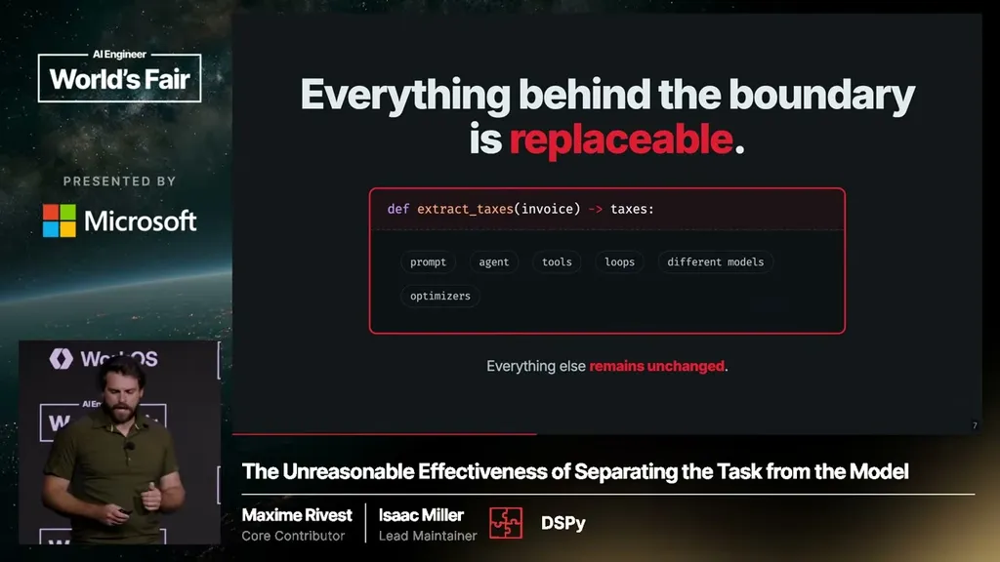
Rivest says specifying a task well enough to optimize requires three things: instructions describing what should happen (the natural-language signature), code enforcing what must happen (hard constraints like re-running with more reasoning if extraction fails, or throwing on invalid output), and evals/examples showing what good looks like for behaviors too latent to state as rules, illustrated with an anecdote about learning to identify a maple tree from examples rather than instructions.
“the first one is what should happen. This is instructions. The signatures that I've been showing you are part of that”
▶ watch at 05:09“they have to be listened to. They have to be enforced. The best way to do that is with code”
▶ watch at 06:13“he couldn't tell me. He couldn't give me the instruction on how to know this tree is a maple, and he certainly couldn't give me code on how to know this tree is a maple”
▶ watch at 07:14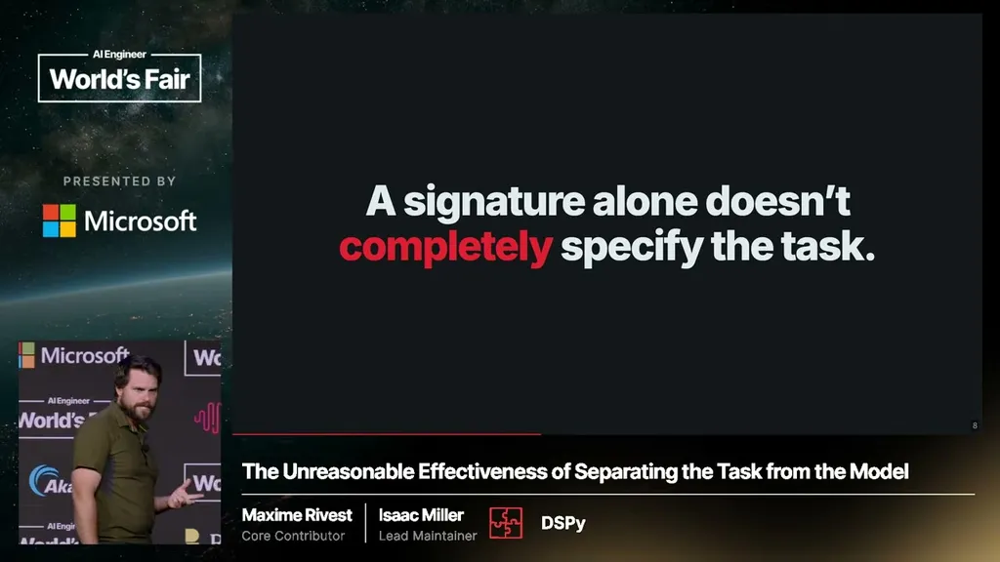
Miller says fixing the DSPy signature lets teams search over cheaper implementations while keeping the same evals; he cites Shopify achieving a 550x cost reduction by moving to a cheaper model without having to redesign their business logic or evals.
“Shopify, 550 times cheaper. They're able to do that because they went from an expensive model to a cheap model, but they could keep the same eval's, keep iterating on their business logic inside”
▶ watch at 09:54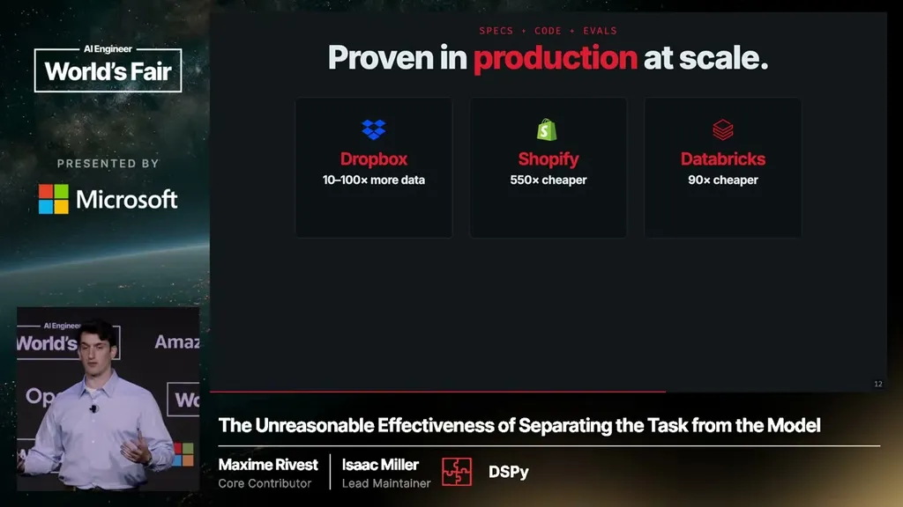
Miller describes DSPy continually absorbing new research techniques -- recursive language models, GEPA, multi-module GRPO -- as roughly one-line additions that leave the signature unchanged, so teams can test whether a new technique helps without committing to it. DSPy 4 adds DSPy.flex, which lets any function learn a custom harness over time, and qualitative learning, a research effort to convert textual production feedback (traces, user actions, product analytics) automatically into evals.
“it's one line, and your signature stays the same. That's what's important here”
▶ watch at 10:56“For any function that you want to implement, you can actually learn a harness over time to solve that function”
▶ watch at 11:58“models are now good enough to interpret whatever textual feedback is present in the environment and convert that into evals”
▶ watch at 12:59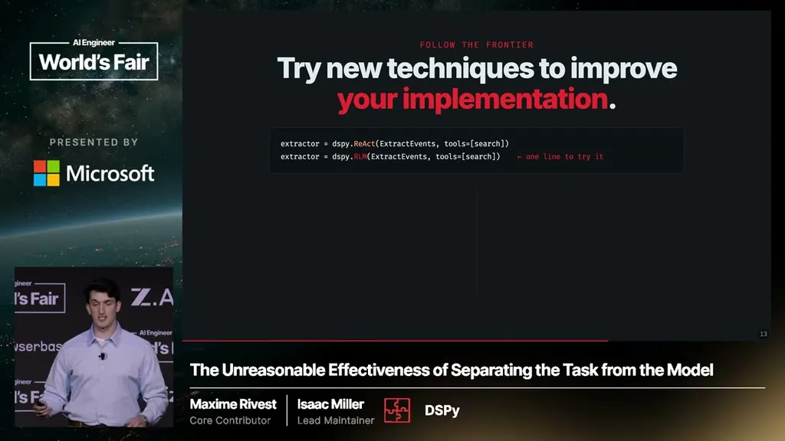
Miller argues that even a highly capable future model won't inherently know a specific team's tasks, context, or relationships -- comparing it to asking Einstein to help with your email -- so this 'last-mile learning' problem of adapting a general model to a specific business persists regardless of frontier model capability.
“Intelligence is very different from being all-knowing. If you were to ask Albert Einstein to help you with your emails, he'd probably ask what's an email”
▶ watch at 14:31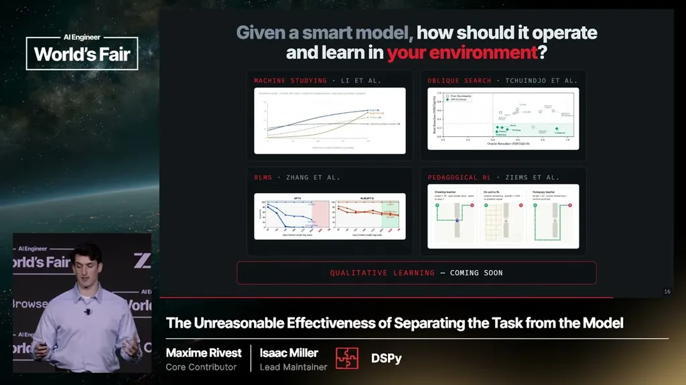
Commentary (ours)
The Shopify 550x figure and the framework's payoff claims come from DSPy's own case studies presented by DSPy's maintainers, not an independent audit of enterprise deployments (ours).


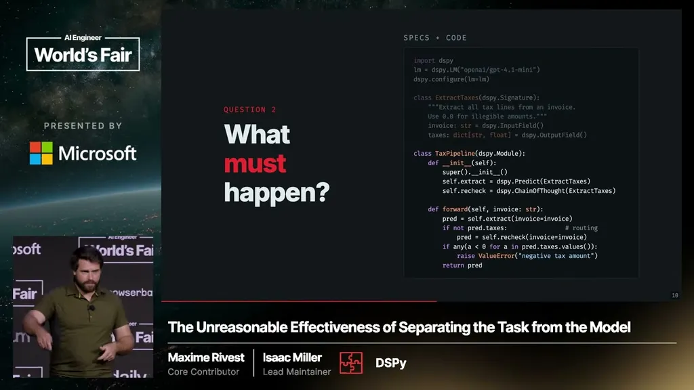
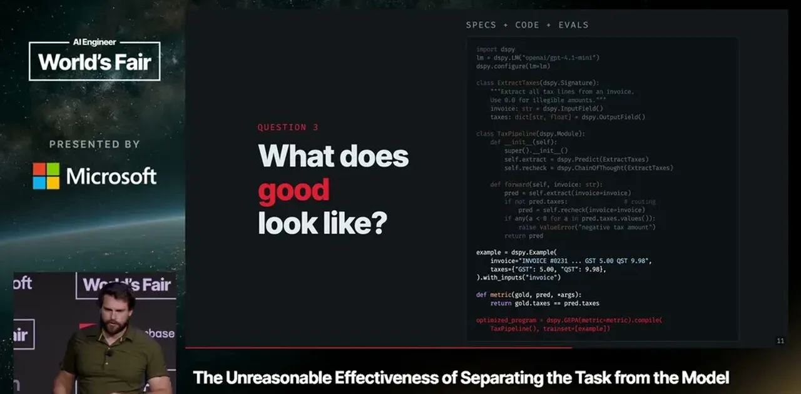
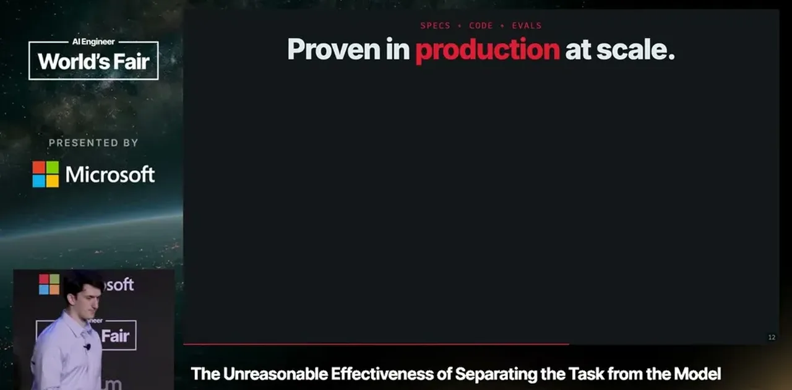
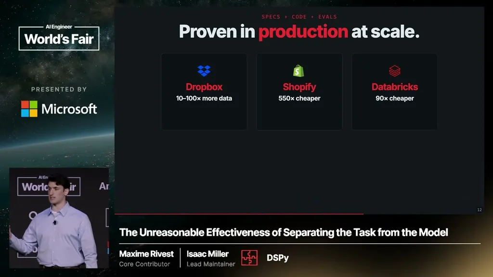
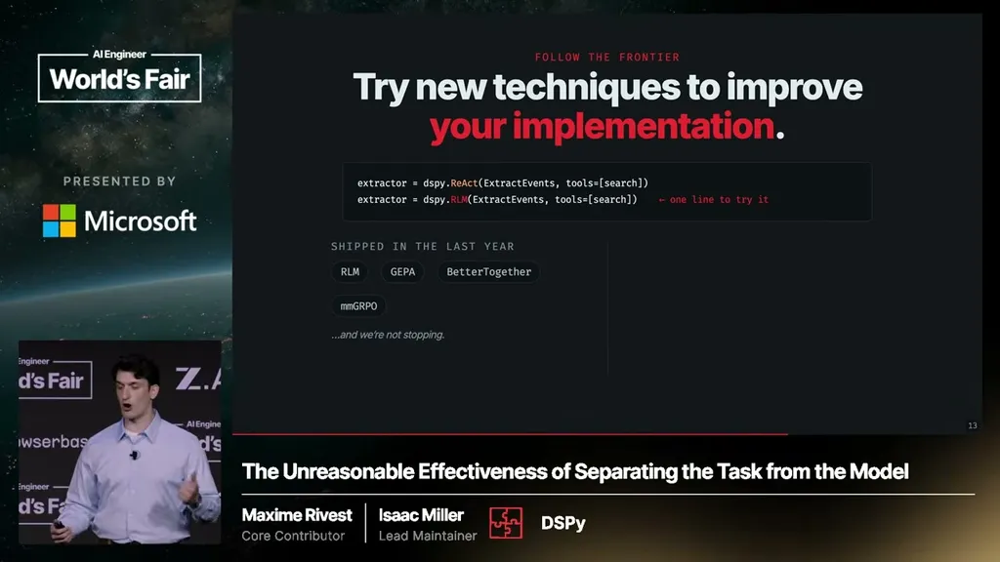
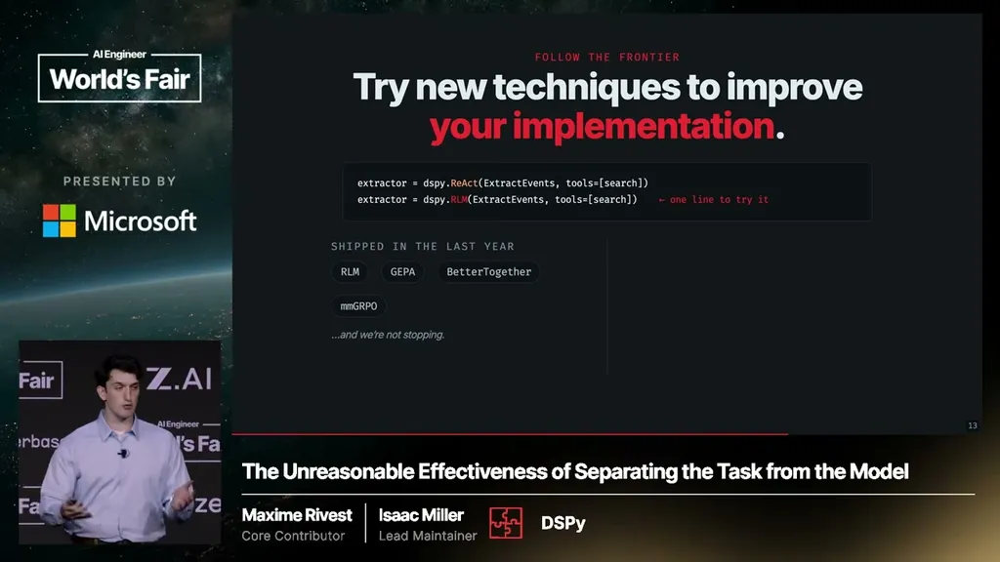
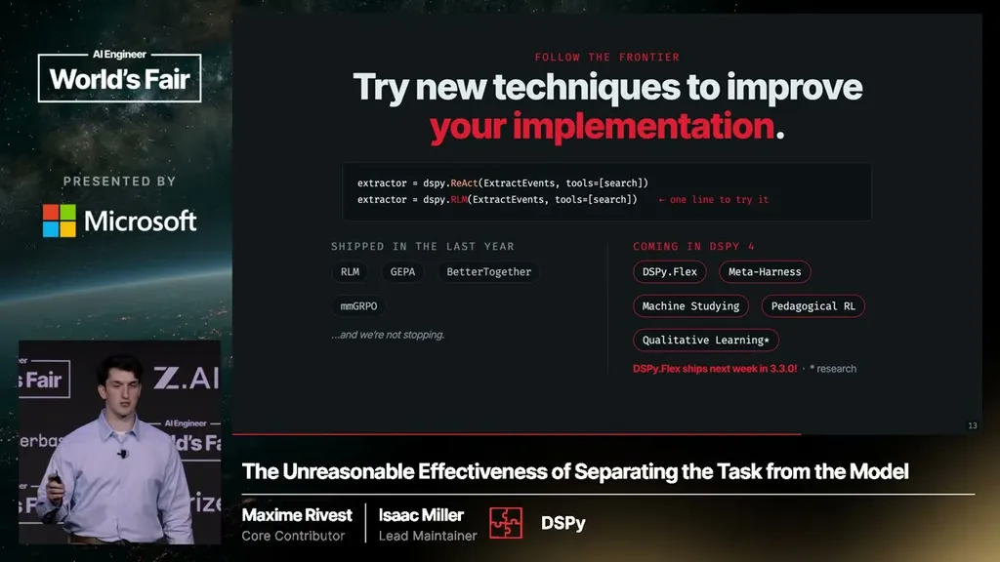
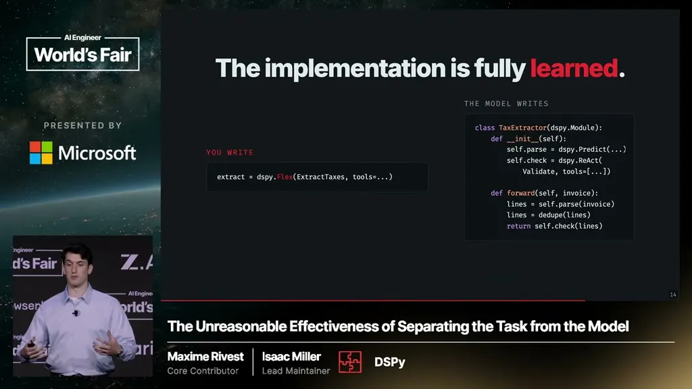
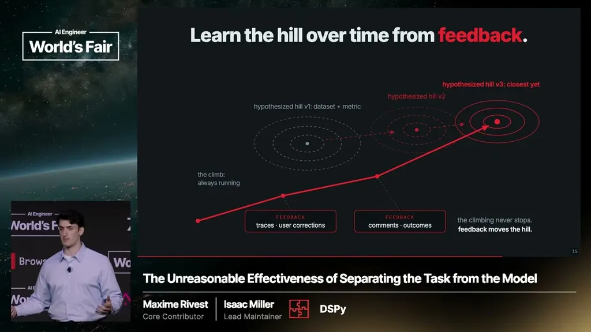
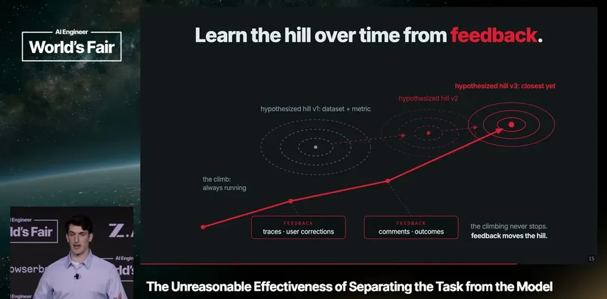
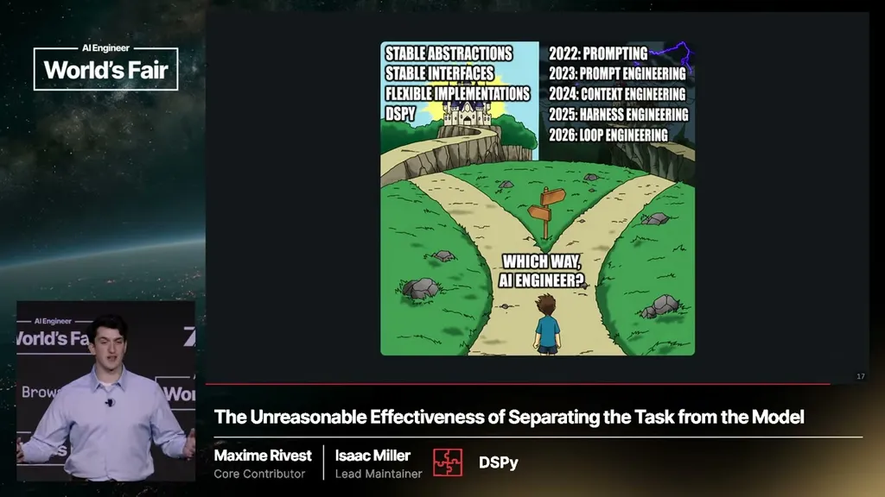
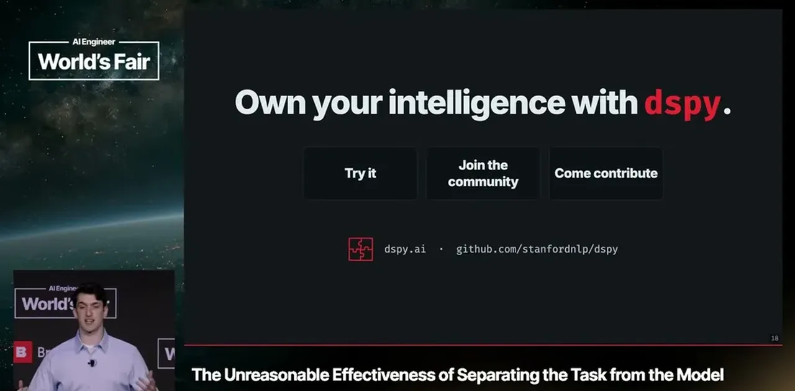
Underlying detail — every claim, typed and timestamped (9)
| Stance | Claim | t |
|---|---|---|
| recommends | Specifying a task's input/output contract as a fixed signature is a prerequisite for later being able to automatically optimize its implementation. | 04:38 |
| asserts | The first of three task-specification languages is instructions -- natural-language signatures describing what should happen. | 05:09 |
| recommends | Hard constraints on what must happen should be enforced with code, not left to the model. | 06:13 |
| asserts | Some task behavior, like classifying a maple tree, can only be learned from examples, not stated as instructions or code. | 07:14 |
| asserts | Shopify cut implementation cost 550x by switching to a cheaper model while keeping the same evals and business logic. | 09:54 |
| recommends | New techniques like recursive language models can be tried as a one-line change while the task signature stays constant. | 10:56 |
| asserts | DSPy.flex lets any function learn a custom harness over time to solve that function. | 11:58 |
| asserts | Qualitative learning aims to have models interpret textual production feedback and convert it automatically into evals the model can improve against. | 12:59 |
| predicts | Even a highly intelligent future model won't inherently know a specific team's tasks or context, so last-mile learning remains necessary. | 14:31 |
Machine-readable copy embedded in this page (script#ontology) and in the corpus ontology.